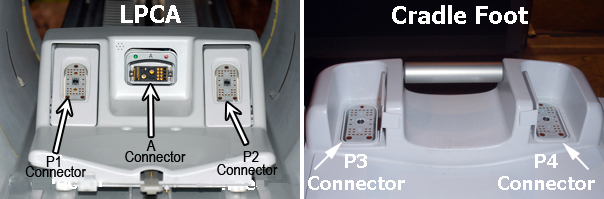
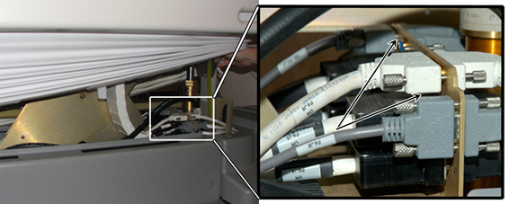
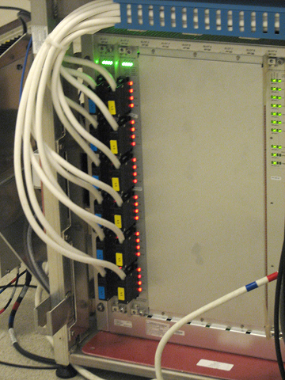
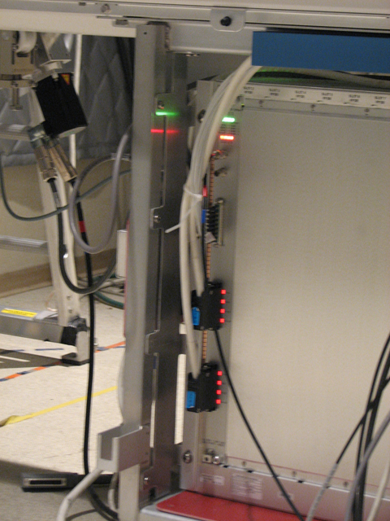

Proprietary to General Electric
Direction 5670000, Rev# 1
Optima MR450w 1.5T Service Methods
Module Version 9.0, Version Date 11/20/09
Proprietary to General Electric |
Diagnostic Link
Diagnostics >> System Function >> RF >> Coil Datapath Diagnostics
Purpose
The Coil Datapath Diagnostic (CDD) tests the signal paths between the coil connectors and the coil inputs to the RF Hub. It also tests portions of the RF Hub that are not covered by internal board level or datapath diagnostics. It utilizes the MCRv tool.
There are 2 MCRv tools, one for 1.5T, another for 3.0T systems. The difference between the tools is the controller with oscillators for the different field strengths.
Physically, the MCRv tool is a hardware module that emulates a coil. It must be connected to the coil inputs or to other points along the coil cable path prior to starting the diagnostic. The MCRv tool generates known test signals and provides known loads that the diagnostic can measure to verify the correct connectivity between the points where the tool is connected and the rest of the system. The MCRv tool is supplied with a variety of cables that allow an FE to attach the tool to various points along the receive path.
The configuration definitions are:
32 / 32 = 32-channel systems with P3 and P4 table ports.
32 / 0 = 32-channel systems with no P3 and P4 table ports.
16 / 0 = 16-channel systems with no P3 and P4 table ports.
Other configuration possibilities:
P3, P4 dock interface panel. On early systems, a dock interface panel was located on the magnet's right front foot. This interface has been removed and cable connections are made at the reroute box.
Re-route box. On early systems, a reroute box was located at the front of the rear ped. Now, the reroute box is only used if the P3 and P4 table ports are used. See the Signal Flow Diagrams for more detail.
There are two types of RF Switch Boards: RFSB and RFSBv. Systems with the reroute box will use the RFSB board. Systems without the reroute box will use the RFSBv board.
MNS up-converter box. If the MNS option is included, there will be an MNS up-converter box placed in the A-connector signal path.
The tests are organized by coil connector type starting with the pathways/connectors that are farthest away (i.e., having the longest signal paths). There are 3 different paths by connector type shown in the columns of the table below. Note that the longest signal paths are at the top of the column. Typically, the user will begin testing by starting with the coil connector.
Table 1: Cable Descriptions
| Cable Description | Quant | Approx. length | Easy Label |
| A port adaptor | 1 | 600mm (~23.6”) | C1 |
| 37 pin sub-D, Male-Fem | 1 | 600mm (~23.6”) | C2 |
| 8w8 Male-Fem | 1 | 600mm (~23.6”) | C3 |
| P port adaptor | 1 | 600mm (~23.6”) | C4 |
| 25 pin sub-D, Male-Fem | 1 | 1000mm (~39.4”) | C5 |
| 16w16, Male-Fem | 2 | 1000mm (~39.4”) | C6 |
| 16w16, Male-Male | 2 | 1000mm (~39.4”) | C7 |
Requirements
1.5T MCRv Tool Kit—Part # 5182417
Test Sequence
Launch the Service Desktop Manager and select the Diagnostics tab from the Common Server desktop.
Under the Service Desktop Manager, select [System Function], [RF], and [Coil Data Path Diagnostics].
In the Coil Path to Test list, select a Coil Path to Test radio button. See Illustration 2
In the MCRv Tool Connection Point drop-down list, choose a connection point, and then physically connect the MCRv tool to the appropriate connection point. See Illustration 1
Illustration 1: Port Locations

To specify a Custom Log Filename, enter text in the Opt. File ID field.
Click the Run button.
| NOTE: | Certain systems will not have the P3 and P4 ports that are located on the patient table. Specifically, systems with RFSBv switchboard(s) will not have P3, P4 ports and reroute box. |
Illustration 2: Coil Datapath Diagnostic Main Screen

Expected Results
Illustration 3: Example of Passed Test

Illustration 4: Example of Failed Test

Test Setup Instructions and Troubleshooting
Use the table below for instructions on how to set up each test.
| NOTE: | To validate the system, test each port, starting at A in the top row, and work from left to right. To troubleshoot, start in the column of the failing port and work your way down that respective column to resolve the failure. |
Illustration 5: MCRv Tool

Table 2: Coil Connector Type Tests
| A | P1 | P2 | P3 In Table | P4 In Table |
| Section 1.1 — 'A' Coil Connector | Section 1.2 — 'P' Coil Connector | Section 1.2 — 'P' Coil Connector | Section 1.2 — 'P' Coil Connector | Section 1.2 — 'P' Coil Connector |
| Section 4.1 — 'A' Cable Chain | — | — | Section 2 — P3, P4 Table Interface | Section 2 — P3, P4 Table Interface |
| Section 5.1 — 'A' MNS Upconverter | — | — | Section 3 — P3, P4 Dock Interface | Section 3 — P3, P4 Dock Interface |
| Section 6.1 — 'A' Reroute Box | Section 6.2 — P1, P2 Reroute Box | Section 6.2 — P1, P2 Reroute Box | Step — P3, P4 Reroute Box | Step — P3, P4 Reroute Box |
| Section 7.1 — 'A' RF Switch Board | Section 7.2 — 'P' RF Switch Board | Section 7.2 — 'P' RF Switch Board | Section 7.2 — 'P' RF Switch Board | Section 7.2 — 'P' RF Switch Board |
Illustration 6: Coil Datapath Diagnostics Diagram 32/32

Illustration 7: Coil Datapath Diagnostics Diagram 32/32 (no MNS)

Illustration 8: Coil Datapath Diagnostics Diagram 32/0

There are up to five coil connectors. Three coil connectors are accessed through the magnet bore: A, P1 and P2. In addition, a 32-channel system could have connectors P3 and P4 in the table.
The coil connector test validates each connector separately by connecting the proper adaptor cable to the MCRv tool and running the indicated test below. The test validates both the signal (RF) path and the control (DC) path for that connector.
| NOTE: | A [Pass] in the test means that all receive circuitry is OK and you can quit. |
Refer to the connection instructions below to run an associated test:
Attach one end of the C1 ('A' port adaptor cable) to the 'A' Connector.
Attach other end to connectors J1 and J5 of the MCRv tool.
If the test fails, first check that the connections are firmly seated, ensure the screws are properly tightened, and then rerun the test. If the test fails again, then consider running tests in the Section 4 - 'A' Cable Chain Interface.
Attach one end of the C4 ('P' port adaptor cable) to the proper 'P' Connector.
Attach other end to connectors J2, J3 and J4 of the MCRv tool. Note that J3 is connected to 16W16 cable labeled RF Channels 1-16 and that J4 is connected to 16W16 cable labeled RF Channels 17-32.
If a test fails for P1 or P2, first check that the connections are firmly seated, ensure the screws are properly tightened, and then rerun the test. If the test fails again, then consider running tests located in Section 6.2 - P1, P2 Reroute Box, if installed. Otherwise, consider running tests located in Section 7.2 - 'P' RF Switch Board.
If a test fails for P3 or P4, first check that the connections are firmly seated, ensure the screws are properly tightened, and then rerun the test. If the test fails again, then consider running tests located in Section 2 - P3, P4 Table Interface.
This diagnostic tests connectivity from the Table Interface Panel (under the table). It is used only for the P3 and P4 signal paths (32-channel only).
This test requires different connections depending on test of P3 or P4:
Illustration 9: Table Interface Panel

Attach C5 (25-pin sub-D Male-Female) to J3 of the Table Interface Panel and to J2 of the MCRv tool. See Illustration 6 and Illustration 7.
Attach C6 (16w16 Male-Female) to J1 of the Table Interface Panel and to J3 of the MCRv tool.
Attach C6 (16w16 Male-Female) to J2 of the Table Interface Panel and to J4 of the MCRv tool.
Attach C5 (25-pin sub-D Male-Female) to J6 of the Table Interface Panel and to J2 of the MCRv tool. See Illustration 6 and Illustration 7.
Attach C6 (16w16 Male-Female) to J4 of the Table Interface Panel and to J3 of the MCRv tool.
Attach C6 (16w16 Male-Female) to J5 of the Table Interface Panel and to J4 of the MCRv tool.
If a test fails for P3 or P4, first check that the connections are firmly seated, ensure the screws are properly tightened, and then rerun the test. If the test fails again, then consider running tests located in Section 3 - P3, P4 Dock Interface, if installed. Otherwise, consider running tests located in Section 6.3 - P3, P4 Reroute Box.
| NOTE: | The P3, P4 Dock Interface was no longer used on systems manufactured during 3rd quarter of 2009. |
This diagnostic tests connectivity from the Dock Interface Panel at the foot of the magnet. It is used only for the P3 and P4 signal paths (32-channel only). This test requires different connections depending on test of P3 or P4:
Illustration 10: Table Dock Interface panel

Attach C5 (25-pin sub-D Male-Female) to J3 of the Dock Interface Panel and to J2 of the MCRv tool. See Illustration 6.
Attach C7 (16w16 Male-Male) to J1 of the Dock Interface Panel and to J3 of the MCRv tool.
Attach C7 (16w16 Male-Male) to J2 of the Dock Interface Panel and to J4 of the MCRv tool.
Attach C5 (25-pin sub-D Male-Female) to J6 of the Dock Interface Panel and to J2 of the MCRv tool. See Illustration 6.
Attach C7 (16w16 Male-Male) to J4 of the Dock Interface Panel and to J3 of the MCRv tool.
Attach C7 (16w16 Male-Male) to J5 of the Dock Interface Panel and to J4 of the MCRv tool.
If a test fails for P3 or P4, first check that the connections are firmly seated, ensure the screws are properly tightened, and then rerun the test. If the test fails again, then consider running tests located in Section 6.3 - P3, P4 Reroute Box.
This diagnostic tests connectivity of the Cable Chain Interface in the magnet bore.
Attach C2 (37-pin sub-D Male-Female) to J2 of 'A' Cable Chain Panel (PED-LPCA) and to J1 of MCRv tool.
Attach C3 (8w8 Male-Female) to J1 of 'A' Cable Chain Panel (PED-LPCA) and to J5 of MCRv tool.
If this test fails, first check that the connections are firmly seated, ensure the screws are properly tightened, and then rerun the test. If the test fails again, then consider running tests located in:
Section 5 - 'A' MNS Upconverter (only if MNS is present)
Section 6.1 - 'A' Reroute Box, (if MNS is not present) (only if reroute box is present)
Section 7 - RF Switch Board
This diagnostic tests connectivity from the Multi Nuclear Spectroscopy (MNS) Upconverter Interface Panel at the rear pedestal.
Attach C2 (37-pin sub-D Male-Female) to RF Control Board (RFCB) J6 in Slot 11 and to J1 of MCRv tool.
Attach C3 (8w8 Male-Female) to J4 of MNS Upconverter I/F and to J5 of MCRv tool.
This diagnostic tests connectivity from the MNS Upconverter Output Cable at the rear pedestal.
Attach C2 (37-pin sub-D Male-Female) to RFCB J6 in Slot 11 and to J1 of MCRv tool.
Disconnect the MNS Upconverter Output Cable from J5 of the MNS Upconverter.
Attach C3 (8w8 Male-Female) to the MNS Upconverter Output Cable and to J5 of MCRv tool.
If this test Fails then consider doing 'A' Port Reroute Interface Test next (if Reroute Box is present) or 'A' Port RF Switch Test (RFSBv) (if Reroute Box not present).
| NOTE: | This section is not applicable for systems with RFSBv switchboards. |
This diagnostic tests connectivity from the Reroute Box.
If the reroute box is present, all five coil connectors have connections that are routed to the Reroute Box. Each test involves a different set of cables and connections as shown below:
Illustration 11: Reroute Box

Attach C2 (37-pin sub-D Male-Female) to RFCB J6 in Slot 11 and to J1 of MCRv tool.
Attach C3 (8w8 Male-Female) to J8 A Connection of Reroute Box I/F and to J5 of MCRv tool.
If this test fails, first check that the connections are firmly seated, ensure the screws are properly tightened, and then rerun the test. If the test fails again, then consider running the test located in Section 7.1 - 'A' RF Switch Board.
This test requires different connections depending on test of P1 or P2. There is also an additional cable connection required if it is a 32-channel system:
Attach C5 (25-pin sub-D Male-Female) to RFCB J1 in Slot 11 and to J2 of the MCRv tool.
Attach C6 (16w16 Male-Female) to P1A of the Reroute Box and to J3 of the MCRv tool.
Attach C6 (16w16 Male-Female) to P1B of the Reroute Box and to J4 of the MCRv tool.
Attach C5 (25-pin sub-D Male-Female) to RFCB J2 in Slot 11 and to J2 of the MCRv tool.
Attach C6 (16w16 Male-Female) to P2A of the Reroute Box and to J3 of the MCRv tool.
Attach C6 (16w16 Male-Female) to P2B of the Reroute Box and to J4 of the MCRv tool.
If the test fails, first check that the connections are firmly seated, ensure the screws are properly tightened, and then rerun the test. If the test fails again, then consider running the test located in Section 7.2 - 'P' RF Switch Board.
This test requires different connections depending on test of P3 or P4.
Attach C5 (25-pin sub-D Male-Female) from RFCB J3 in Slot 11 and to J2 of the MCRv tool.
Attach C6 (16w16 Male-Female) to P3A of the Reroute Box and to J3 of the MCRv tool.
Attach C6 (16w16 Male-Female) to P3B of the Reroute Box and to J4 of the MCRv tool.
Attach C5 (25-pin sub-D Male-Female) from RFCB J4 in Slot 11 and to J2 of the MCRv tool.
Attach C6 (16w16 Male-Female) to P4A of the Reroute Box and to J3 of the MCRv tool.
Attach C6 (16w16 Male-Female) to P4B of the Reroute Box and to J4 of the MCRv tool.
If the test fails, first check that the connections are firmly seated, ensure the screws are properly tightened, and then rerun the test. If the test fails again, then consider running the test located in Section 7.2 - 'P' RF Switch Board.
There are two types of RF Switch Boards: RFSB and RFSBv. Systems with the reroute box will use the RFSB board. Systems without the reroute box will use the RFSBv board. Each port involves a different set of cables and connections. See Illustration 12 and Illustration 13. The troubleshooting below contains instructions for both types of boards.
Illustration 12: RF Switch Board (RFSB)

Illustration 13: RF Switch Board (RFSBv)

Attach C5 (25-pin sub-D Male-Female) from RFCB J1 in Slot 11 to J2 of the MCRv tool.
Attach C7 (16w16 Male-Male) from RF Switch Board (RFSB1) J3 in Slot 1 to J3 of the MCRv tool.
Attach C2 (37-pin sub-D Male-Female) to RFCB J6 in Slot 11 to J1 of the MCRv tool.
Attach C3 (8w8 Male-Female) from RFSBv1 A1/A2 in Slot 1 to J5 of the MCRv tool.
The P port tests require different connections based upon the user selected channel. This information is supplied by a help popup in the diagnostics screen which is shown when the user selects the channel to test. The connection instructions for each of the P ports are shown below:
Attach C5 (25-pin sub-D Male-Female) from RFCB J1 in Slot 11 to J2 of the MCRv tool.
Attach C7 to the MCRv tool J3, but the connection to RFSB1 or RFSB2 and the associated connector number is dependent on channel number selected and will be displayed by the help popup when the channel number is selected.
Attach C5 (25-pin sub-D Male-Female) from RFCB J2 in Slot 11 to J2 of the MCRv tool.
Attach C7 to the MCRv tool J3, but the connection to RFSB1 or RFSB2 and the associated connector number is dependent on channel number selected and will be displayed by the help popup when the channel number is selected.
Attach C5 (25-pin sub-D Male-Female) from RFCB J3 in Slot 11 to J2 of the MCRv tool.
Attach C7 to the MCRv tool J3, but the connection to RFSB1 or RFSB2 and the associated connector number is dependent on channel number selected. This information will be displayed in a popup window when the channel number is selected.
Attach C5 (25-pin sub-D Male-Female) from RFCB J4 in Slot 11 to J2 of the MCRv tool.
Attach C7 to MCRv tool J3, but the connection to RFSB1 or RFSB2 and the associated connector number is dependent on channel number selected and will be displayed by the help popup when the channel number is selected.
| NOTE: | Depending on which diagnostic parts fail, the RFSB, the MCDB, the RF Hub backplane (unlikely), or something upstream could be defective. Run additional RF Hub diagnostics and/or swap MCDBs (32-channel system) to help isolate bias failures to the switch board or driver board. |
Attach C5 (25-pin sub-D Male-Female) to RFCB J1 in Slot 11 to J2 of the MCRv tool.
Attach C7 (16w16 Male-Male) to P1 of the RFSBv1 in Slot 1 and to J3 of the MCRv tool.
Attach C7 (16w16 Male-Male) to P1 of the RFSBv2 in Slot 2 and to J4 of the MCRv tool (32-channel only).
Attach C5 (25-pin sub-D Male-Female) to RFCB J2 in Slot 11 to J2 of the MCRv tool.
Attach C7 (16w16 Male-Male) to P2 of the RFSBv1 in Slot 1 and to J3 of the MCRv tool.
Attach C7 (16w16 Male-Male) to P2 of the RFSBv2 in Slot 2 and to J4 of the MCRv tool (32-channel only).
| NOTE: | Depending on which diagnostic parts fail, the RFSB, the MCDB, the RF Hub backplane (unlikely), or something upstream could be defective. Run additional RF Hub diagnostics and/or swap MCDBs (32-channel system) to help isolate bias failures to the switch board or driver board. |